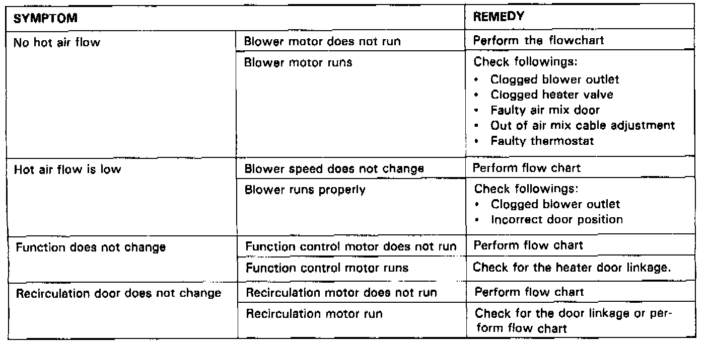

- Diagnosis By Symptom - Manual Heating and Air Conditioning
Heater Symptom Chart
A/C System, Cooling Fan System and Fan Timer System Troubleshooting
Symptoms
1. With A/C and blower switches on, A/C clutch and fans do not operate: -SEE FLOW CHART "A"
2. With A/C and blower switches on, A/C clutch operates but both fans do not: -PERFORM RADIATOR FAN CONTROL UNIT INPUT TEST
3. With A/C and blower switches on, fans operate but A/C clutch does not engage: -SEE FLOW CHART "C"
4. With A/C and blower switches on, fan does not operate at the correct speed: -PERFORM RADIATOR FAN CONTROL UNIT INPUT TEST
5. With A/C and blower switches on, A/C clutch engages but only one fan runs:-PERFORM RADIATOR FAN CONTROL UNIT INPUT TEST
6. With A/C and blower switches off, cooling fans do not come on even with high coolant temperature: -PERFORM RADIATOR FAN CONTROL UNIT INPUT TEST
7. When engine is turned off and oil temp is above 220°F the condenser fan does not come on: -PERFORM FAN TIMER INPUT TEST